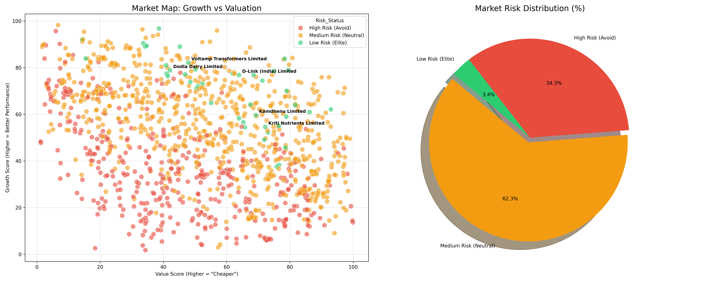

Introduction and Objectives
Research Gaps
Introduction:
Financial stability assessment is critical for investors and firms. This project develops an AI-driven stock screening tool utilizing an integrated "M-Score" encompassing quality, growth, value, and efficiency metrics.
Objectives:
Financial stability assessment is critical for investors and firms. This project develops an AI-driven stock screening tool utilizing an integrated "M-Score" encompassing quality, growth, value, and efficiency metrics.
Objectives:
- To formulate a comprehensive risk indicator combining key financial fundamental ratios.
- To evaluate multiple machine learning algorithms for robust risk categorization (Low, Medium, High).
- To create a market dashboard for visual risk profiling of specific stocks.
Insert Text
Current risk models often rely on outdated manual thresholds rather than data-driven market percentile rankings. Additionally, many tools fail to combine growth strategies alongside value investments securely, leading to isolated predictive insights. This research bridges that gap by systematically integrating 19 key corporate ratios analyzed comprehensively across 1000 aggregated entities.
Current risk models often rely on outdated manual thresholds rather than data-driven market percentile rankings. Additionally, many tools fail to combine growth strategies alongside value investments securely, leading to isolated predictive insights. This research bridges that gap by systematically integrating 19 key corporate ratios analyzed comprehensively across 1000 aggregated entities.
Methodology and Techniques
Data Collection & Preprocessing
⬇️
Rank Calculation & M-Score (Quality, Growth, Value, Efficiency)
⬇️
Machine Learning Algorithms (RF, GBM, CatBoost, SVM)
Selected Features for Algorithm:
P/E Ratio, P/S Ratio, EV/EBITDA, P/B Ratio, ROE, ROCE, Profit Margin, Debt/Equity, YoY Growth, Asset Turnover, etc.
P/E Ratio, P/S Ratio, EV/EBITDA, P/B Ratio, ROE, ROCE, Profit Margin, Debt/Equity, YoY Growth, Asset Turnover, etc.
Techniques Evaluated: Random Forest Classifier, Gradient Boosting, XGBoost, CatBoost.
Work Completed and Results
Market Dashboard

Visualization displaying Risk distribution percentages across Low, Medium, and High Risk domains.
Model Comparison Accuracy
| Model | Accuracy |
|---|---|
| Random Forest | 99.5% |
| Gradient Boosting M. | 99.0% |
| CatBoost Classifier | 99.5% |
Random forest yields an incredibly high accuracy on the normalized test sample (80/20 split), demonstrating the robust relationship between our M-score recalculation and the intrinsic features.
Conclusion and Remaining Work
Bibliography/ References
Reliable AI Core
Interpretability
Scalable Data
Live Analysis
Conclusion: We successfully automated financial risk screening matching top-performer characteristics with >99% validation accuracy.
Remaining Work: Real-time API integration for live stock quotes integration to replace static Excel sheets.
Remaining Work: Real-time API integration for live stock quotes integration to replace static Excel sheets.
- pandas documentation: Data Analysis library
- scikit-learn documentation: Machine Learning Algorithms
- seaborn documentation: Statistical Data Visualization